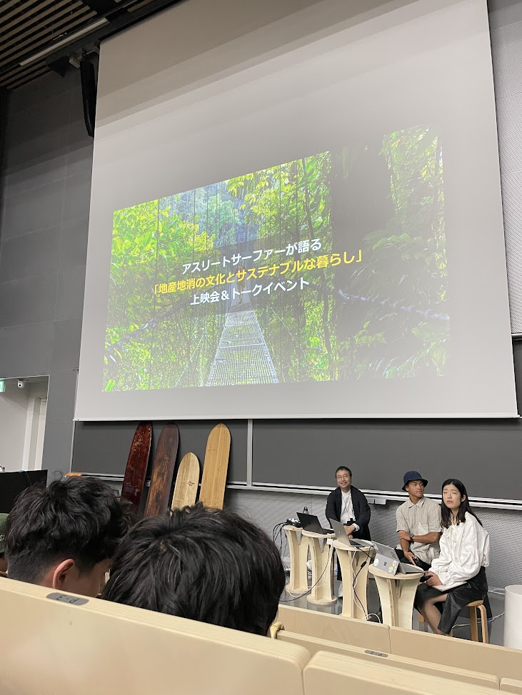
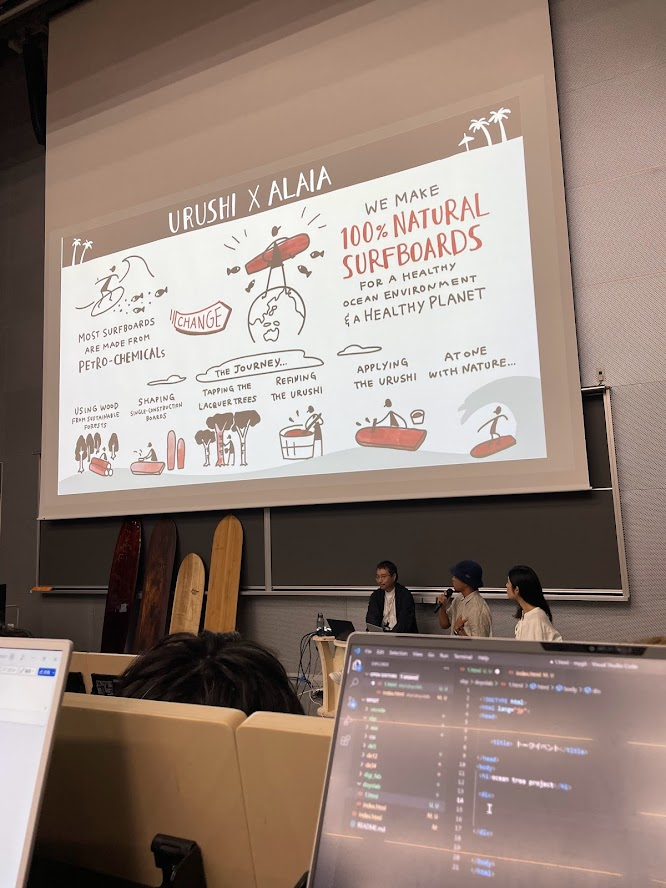

ocean tree project


感想
動画の中で紹介された言葉の一つに「自然のリズムで作られる物たちはいつの間にか人々から遠のいた」とあったが、この言葉にとても共感をした。
サービスや情報にあふれた現代では環境配慮よりも先に優れた製品が出来上がってしまう。
自然のリズムで作られる製品ではスピードが求められる競争社会には適応することができず、大量生産大量消費をベースとする現代を作り上げ
、自然破壊を進行させることとなった。
個人的な偏った考えとしては、経済活動が活性化すればするほど、さらなる環境破壊の発生リスクが伴うという印象がある。
様々な企業が莫大なコストをかけて持続可能な社会の実現に向け投資を行う中、個人で周りを巻き込みながら行動されていて感銘を受けた。
とても面白い講演だった。